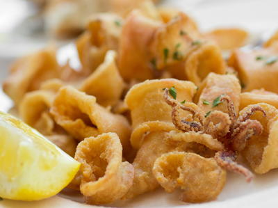

Seafoods
Calamari Fritti:
Ingredients:
- 1 pound cleaned squid
- 5 tablespoons all-purpose flour
- 5 tablespoons semolina flour or stone-ground yellow cornmeal
- 2 teaspoons salt, preferably kosher
- ½ teaspoon freshly ground black pepper
- 3 to 4 cups peanut oil
- Lemon wedges or 1 cup Marinara Sauce, for serving
Procedure:
- Cut the squid horizontally into ½-inch-thick rings.
Cut the tentacles in half lengthwise.
Pat the squid dry with paper towels. - In a shallow bowl or a plastic bag, mix the flour, semolina, salt, and pepper.
Add the squid pieces, and stir or shake to cover with the flour mixture.
Remove the squid, shaking the excess flour off the pieces, and place them on a wire rack.
Let them sit for 10 minutes (this allows the coating to adhere well). - Pour the oil into a large saucepan (it should be 2 inches deep) and heat until it registers 375°F on a deep-frying thermometer.
Carefully add one-quarter to one’ third of the squid pieces to the oil, without crowding them, and fry for 1½ minutes.
Remove immediately with a slotted spoon and drain on paper towels.
Let the oil temperature rise back up to 375°F, and repeat with the rest of the squid. - Serve immediately, with lemon wedges or a side dish of Marinara Sauce.
Goan Prawn Curry with Raw Mango:

Ingredients:
- 15-20 prawns or shrimps
For Gravy:
- 1/2 cup grated coconut
- 1 marble sized ball of tamarind
- 1 tsp turmeric powder
- 2-3 dry red chillies or Kashmiri red chillies
- Pepper to taste
- 1/2 tsp coriander seeds
- 1/2 chopped onion
- 1 raw mango
- 1 tsp oil
For Marination:
- 1 Tbsp turmeric powder
- 1/2 Tbsp chilli powder
- 1 tsp salt
Procedure:
For Marination:
- De-shell the prawns.
- Remove the thick black thread present in the middle of the prawn's back.
- Apply turmeric powder, chilly powder and salt.
- Leave it for about 30 minutes.
- Peel raw mango and chop it into pieces.
For Gravy:
- Grind grated coconut, turmeric powder, tamarind, peppercorns, coriander and red chillies.
- Add 1/4 cup water, prawns and raw mango pieces in an aluminum bowl.
- Add 2 Tbsp of gravy.
- Let it cook for 10 minutes.
- Pour in the gravy and stir.
- Add water and cook on a medium flame for about 10 minutes.
- Add oil in a pan with chopped onions and fry until burnt.
- Pour it into the gravy and close the lid.
- Add salt to taste.
Clams with Bacon:

Ingredients:
- 4½ pounds littleneck clams
- 2 tablespoons olive oil
- 8 ounces slab bacon, cut into thick 1½-inch chunks
- Few sprigs of fresh thyme
- Splash of dry white wine
- Squeeze of lemon juice (optional)
Procedure:
- Wash the clams and discard any that do not shut tightly when gently tapped.
- Place a large, heavy-based pan (with lid) over medium heat.
Add the oil, bacon, and thyme and fry until the bacon is golden brown around the edges, 4-5 minutes.
Pour off excess fat, if you like. Increase the heat, pour in a splash of white wine, and immediately tip in the clams.
Give the pan a shake, then cover. Let the clams steam until they have opened, 3-4 minutes.
(Discard any clams that remain closed.) - Grind some black pepper over the clams and add a squeeze of lemon juice, if you like.
You probably won't need to add salt, because the clams and bacon are already salty.
Divide the clams, bacon, and pan juices among warm bowls and serve at once.
Baked Stuffed Lobster:

Ingredients:
- 1/4 pound (1 stick) unsalted butter
- 3 tablespoons finely chopped shallots
- 2 cloves garlic, minced
- 1/4 cup medium-dry sherry
- 1 pound fresh crab meat, picked over to remove any shell or cartilage
- 1 cup crushed ritz crackers
- 2 tablespoons chopped parsley
- Salt and freshly ground black pepper
- 4 live 1½ pound lobsters
- 3 tablespoons butter, melted
Procedure:
- In a large sauté pan, melt the butter.
Add the shallots and cook over medium heat, stirring, until beginning to soften.
Add the garlic and cook for 1 minute. Add the sherry and cook for 1 minute.
Remove from the heat and add the crabmeat, cracker crumbs, and parsley.
Season to taste with salt and pepper.
(You may not need salt because the cracker crumbs can be salty.) Cool the stuffing completely. - Preheat the oven to 425°F.
- Place the lobsters on a cutting board and use a large knife to split them in half.
Remove the sand sac from the head and the black intestinal vein.
Take off the claw bands and, if the lobsters are hard-shells, crack the claws in a couple of places with a hammer so the heat will penetrate.
Place the lobsters, cut sides up, on two rimmed baking sheets and sprinkle the stuffing mixture over the tail and bodies of the lobsters.
Drizzle with melted butter. - Bake until the lobster meat is opaque and the crumbs are crisp and golden brown, 15 to 22 minutes.
Crab and Salmon Cakes:

Ingredients:
- 8 ounces cooked salmon
- 8 ounces canned lump crabmeat, picked clean
- 3 scallions, minced (include some of the green)
- ¼ cup cracker meal
- ¼ cup mayonnaise, homemade or high-quality store-bought
- 1 egg, beaten
- 1 tablespoon finely chopped fresh parsley
- 1 teaspoon Dijon mustard
- 1/8 teaspoon grated nutmeg
- ¼ teaspoon Old Bay Seasoning or 1/8 teaspoon cayenne pepper
- 1 egg, beaten with 1 tablespoon water
- 1 cup fine bread crumbs, for dredging
- ½ cup mayonnaise, homemade or high-quality store-bought
- ½ cup plain yogurt
- 1 tablespoon Dijon mustard
- 1 tablespoon catsup
- 1 tablespoon capers, drained, dried, and chopped
- 1 tablespoon finely chopped sour pickles
- 1 tablespoon chopped fresh parsley
- 1 tablespoon chopped fresh parsley
- 1 hard boiled egg, chopped (optional)
- ¼ cup vegetable oil, for frying)
Procedure:
- Prepare the cakes: Remove any bones or skin from the salmon.
In a medium bowl, flake the salmon with a fork.
Add the crabmeat, scallions, cracker meal, mayonnaise, beaten egg, parsley, mustard, nutmeg, and Old Bay Seasoning.
Mix well, cover, and refrigerate for 1 hour. - Shape the cold mixture into 8 small round cakes.
Dip the cakes in the beaten-egg mixture and coat evenly with the breadcrumbs. Place the cakes on a large plate.
Cover and refrigerate for 1 hour or more. - Prepare the sauce: In a small bowl, whisk the mayonnaise, yogurt, and mustard until smooth.
Add the remaining ingredients, cover, and chill. - In a large skillet, heat the oil over medium heat until hot, but not smoking.
Add the cakes and fry until golden on both sides, about 5 minutes.
Drain on paper toweling. Serve over tossed salad and accompany with the sauce
Kane Rava Fry:

Ingredients:
- 2 lady fish
- Red chilli paste
- A plate of semolina
- Refined oil
For Gravy:
- 100 gm red chilli
- 2 tsp ginger garlic paste
- 1 tsp salt
- 2 Tbsp lime juice
- 1 egg
- 1 Tbsp cornflour
Procedure:
- Clean the fish.
- Apply red chilli paste on the inside and the outside of the fish.
- Keep the fish aside for marination for about half an hour.
- Then coat the marinated fish with semolina and deep fry till done snd serve.
For Gravy:
- Boil red chillies in water.
- Strain the chillies and grind them to a thick paste.
- Now add gingers, garlic paste, salt, lime juice, egg, and corn flour.
Cold Tuna Salad:

Ingredients:
- 3 Cups pasta, boiled
- 2 tbsp celery, chopped
- 1 cup tuna
- 1/2 tsp pepper
- 1 tsp lemon juice
- 3 hard boiled eggs cut into small pieces
- 2 tsp olive oil
- salt
Procedure:
- In a large bowl, take the pasta; add tuna, celery, olive oil and lemon juice. Sprinkle salt and pepper and mix well.
- Garnish with eggs. Cover and refrigerate for a least one hour or overnight. Serve.
Ca Cang Kho:

Ingredients:
- 15 gms dice onion
- 5 gms minced garlic
- 30 gms fresh coriander
- 15 gms spring onion
- 200 gms sole fish slice
- 5 gms dark soya sauce
- 5 gms black pepper (crushed), roasted
- 3 gms oyster sauce
- 15 ml oil
- 20 gms tempura flour
Procedure:
- Dust the sole fillet with tempura flour.
- Pour oil for frying the fish fillet.
- Put the fish into the oil and fry till golden, keep it aside.
- Take another wok and keep it on high flame.
- Add garlic, saute till brown.
- Add diced onion, oyster sauce, crushed black pepper, fried fish, then dark soya sauce. Then sauté for a while, adding sliced
spring onion and fresh green coriander and sauté again. Adjust the seasoning, serve hot.
Chepala Iguru (Fish Curry):

Ingredients:
- 500 Gram Fish (cut into small pieces)
- 400 Gram Onions, finely chopped
- 4 Green chillies, sliced
- 2 tsp Red chilli powder
- 1 tsp Cumin powder
- 1 tsp Coriander powder
- 1 tsp Turmeric powder
- 1 Tomato
- 1 Tbsp Ginger-garlic paste
- 2 Tbsp Coriander leaves
- 3/4 Cup Oil
- Salt
For the marinade::
- 1/2 tsp Red chilli powder
- 1/2 tsp Turmeric powder
- salt
Procedure:
- Marinate the fish with chilli powder, turmeric and salt, keep for 1/2 an hour.
- Fry fish pieces in oil till they turn golden brown.
- Now add onions and green chillies and fry till golden brown.
- Add dry powders, ginger, garlic paste, salt and tomato, fry till the oil separates.
- Add water and bring to a boil.
- Add fried fish and boil for about 7 minutes.
- Garnish with coriander leaves and serve hot.